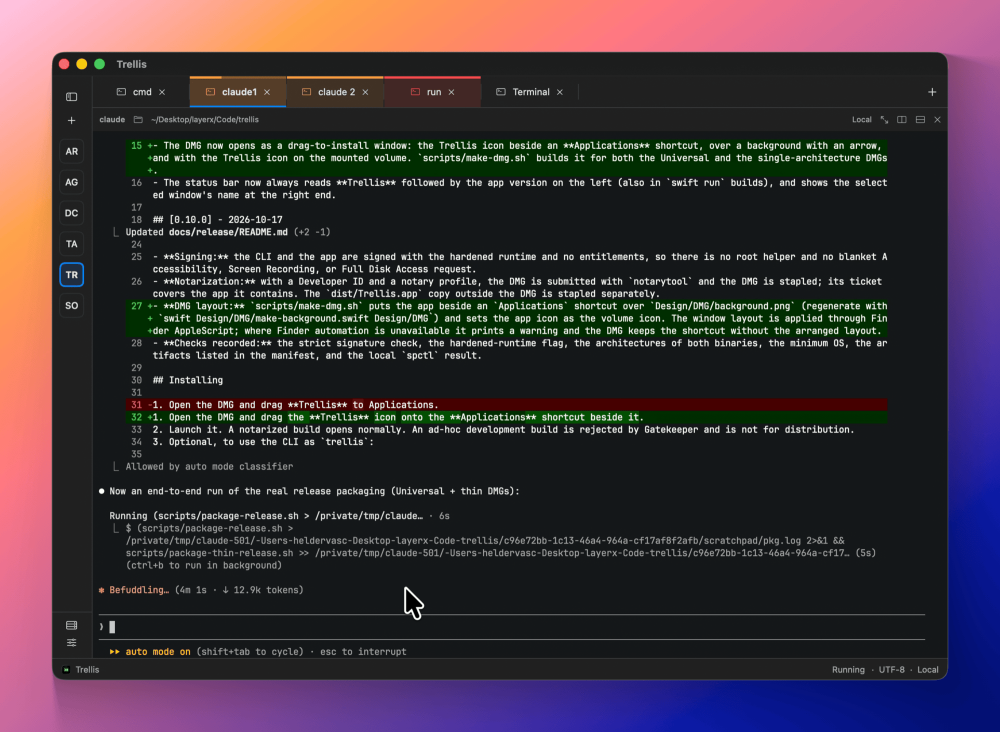

User guide
Trellis
Trellis is a native terminal for macOS that keeps many sessions organized. Each project gets its own space in the sidebar, with named tabs and nested splits, and your sessions keep running when you switch away or quit.

The idea
Most terminals give you a pile of tabs. Trellis gives that pile a shape:
- A space per project. The sidebar lists your spaces. Each one holds its own tabs, so switching projects never means hunting through twenty tabs.
- Layouts you can repeat. Save a project's tabs, splits, commands and git repositories in the Projects library and open it again in one step, on this Mac or on a saved host.
- Sessions that hold on. Switching spaces or tabs never stops a process. By default, sessions also keep running after you quit and come back running when you reopen Trellis.
- Everything from the keyboard. Splits, focus, tabs, spaces and every action in the command palette have shortcuts you can rebind.
- Built to be driven. The
trellisCLI, a local automation API and an optional MCP server let scripts and coding agents do what you do, within the permissions you grant.
Read Concepts for how spaces, tabs, panes and sessions fit together.
Start here
Getting startedInstall Trellis, take the tour and open your first project.
ConceptsSpaces, tabs, splits, panes and sessions.
Keyboard shortcutsThe defaults, and how to change them.
SettingsAppearance, sessions, themes, agents and more.
Features
Spaces, tabs & splitsRenameable, color-labeled tabs and nested splits.
TerminalSearch, safe paste, links, ligatures and inline images.
Projects & tasksReusable layouts and
launch.json tasks.
Coding agentsClaude Code, Codex and pi, with their status on each tab.
SSH hostsA saved host library that uses your system ssh.
Remote workspacesSessions that live on a host and survive disconnects.
Files & changesBrowse the project and stage git changes beside your panes.
ThemesTen built-in families, live preview and JSON themes.
Requirements
| Requirement | Details |
|---|---|
| macOS | macOS 14 Sonoma or later |
| Mac | Apple silicon or Intel (one Universal 2 app) |
| Shell | Any login shell. Shell integration works with zsh, bash and fish. |
| SSH | The system /usr/bin/ssh. Trellis has no SSH implementation of its own. |
Privacy at a glance
Trellis has no telemetry. Terminal output and what you type are never logged. The only network request it makes by itself is the update check, which you start or turn on. See Privacy & data.